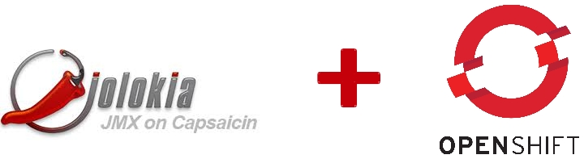

Openshift Fuse health checks with Jolokia
I recently ran into a problem where I needed to create an Openshift healthcheck for a Fuse container. Normally all Fuse containers exposed an http endpoint which was used in the healthcheck. However additional security requirements dictated the use of client certificates. Currently it is not possible to create a healthcheck with a two-way-ssl connection.
As another way to monitor if all Camel routes are started I decided to leverage the JMX beans exposed by Jolokia. For those who are unfamiliar with Jolokia, it essentially is JMX over json/http.

The problem was that by default the Jolokia endpoint is secured with basic authentication, and the password is generated for each created container in Openshift.
However, the Jolokia password for each container is available in the base image (FIS 2 fis-java base image was used) of each container: /opt/etc/jolokia.pw
This file can be used to execute the curl request to the Jolokia endpoint:
curl -k -v https://jolokia:`cat /opt/jolokia/etc/jolokia.pw`@localhost:8778/jolokia/exec/org.apache.camel:context=myCamelContext,type=routes,name=%22myJettyEndpoint%22/getState%28%29
In the above example the state of the “myJettyEndpoint” camel endpoint is requested.